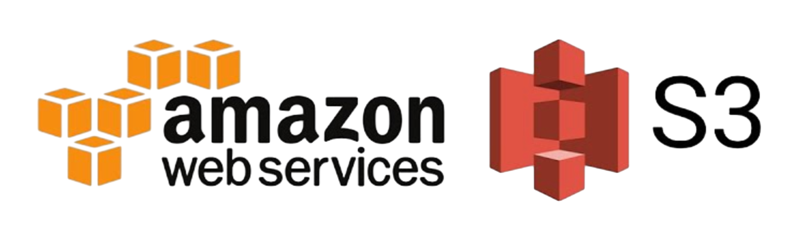
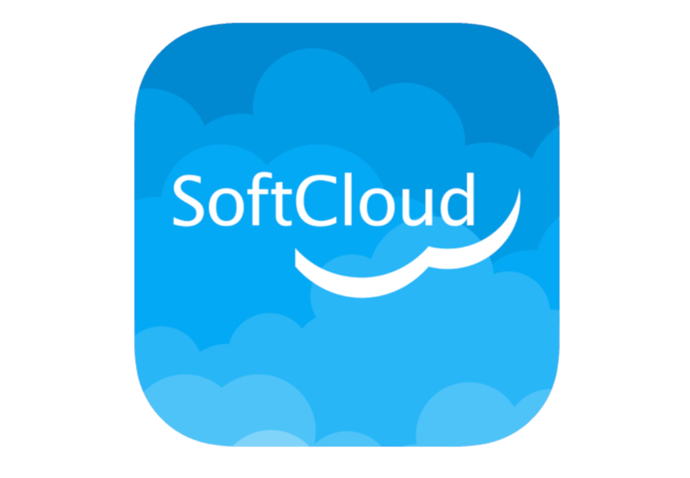

История развития облачных технологий
Студент ИОПС-23м
Первые шаги
1963 год
DARPA выделяет Массачусетскому технологическому институту (MIT) грант в размере двух миллионов долларов на разработку Project on Mathematics and Computation (Project MAC)

Фото из музея MIT, лаборатория вычислительной техники, начало 60-х
1963 год
Возглавили: Роберт Марио Фано, Фернандо Хосе Корбато
Цель исследователей: разработка принципиально новой системы разделения
времени, предназначенной для организации совместного доступа к ресурсам электронно-
вычислительных машин нескольким удаленным пользователям.
1963 год
Project MAC. В основе созданная Фернандо Хосе Корбато система Corbato Compatible Time-Sharing System (CTSS), которая позволяла пользователям нескольких подключенных к ЭВМ терминалов обращаться к одной и той же работающей на такой машине программе
1963 год
Через полгода 200 пользователей в десяти различных лабораториях смогли подключиться к одному компьютеру и централизованно запускать на нём программы
1969 год
Компании Bell Laboratories и General Electric создали многопользовательскую операционную систему с разделением времени Multics (Multiplexed Information and Computing Service)
1971 год
Кен Томпсон и Деннис Ритчи создали первую версию UNIX
Кен Томпсон (за клавиатурой PDP-11) и Деннис Ритчи
Середина 1980-х годов
Операционная система Plan 9, основанная на концепциях UNIX
Эта ОС превращает всю компьютерную сеть в одну глобальную многопользовательскую систему
с общими ресурсами, доступ к которым осуществляется по требованию и в соответствии с правами пользователя
Интерфейс Plan 9
Интерфейс Inferno
В это же время...
Середина 1960-х годов
Появление виртуальных машин. Эксперименты проводились в Исследовательском центре IBM Томаса Дж. Уотсона, была разработана система IBM M44/44x
IBM 7044
Середина 1960-х годов
Эксперименты с машиной IBM CP-40: специально модифицированным компьютером IBM System/360 Model 40
1966 год
Появление первых управляемых сред выполнения (MRE)
Основная задача - предоставление платформенно-независимой среды программирования
JVM
1966 год
Появление термина «облачные вычисления» во внутренней документации фирмы Compaq
1989 год
Компания Apple запускает проект Paradigm, в рамках которого планировалось разработать новую ОС, способную распределять вычислительную нагрузку между множеством устройств, одновременно работающих в сети
1990 год
Для разработки ОС создана отдельная компания General Magic
Операционная система получила название Magic Cap
Интерфейс Magic Cap
Облака в массы
14 марта 2006 года
Amazon становится первым провайдером, предоставляющий облачный сервис, Simple Storage Service или Amazon S3
2007-2010 годы
2008 год
первые в России
2008 год
Первая российская компания "ИТ-ГРАД", предоставляющая в аренду комплексную облачную IT-инфраструктуру
2010 год
Компания Softline запустила в коммерческую эксплуатацию первый в России проект, построенный на полноценной «облачной» SaaS платформе – Softcloud
